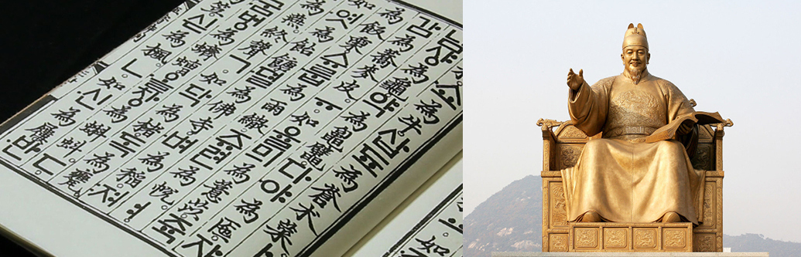
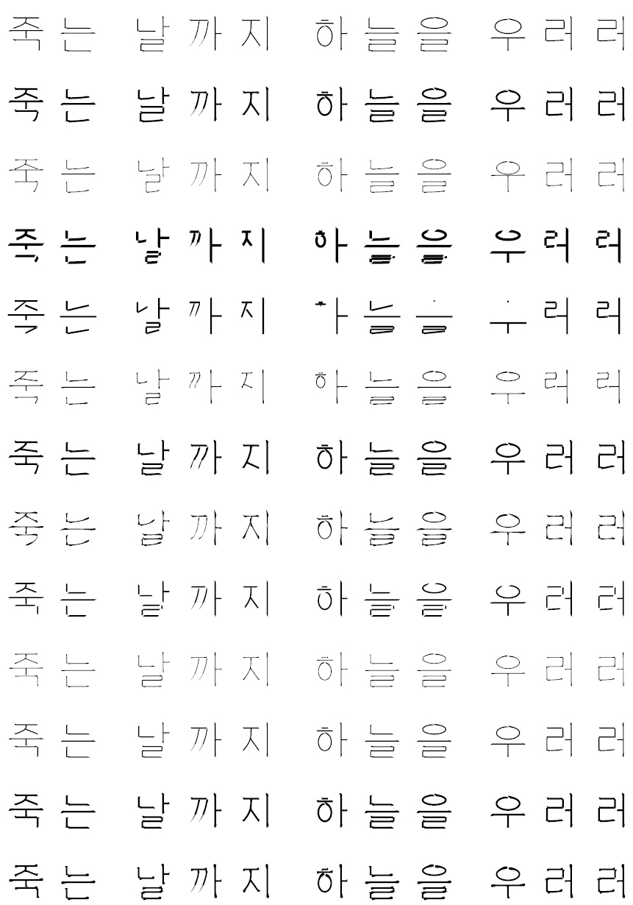

The Korean alphabet, known as Hangul in South Korea or Chosŏn'gŭl in North Korea, has been used to write the Korean language since its creation in the 15th century by King Sejong the Great.

Hoonminjeongeum (Left) and Statue of King Sejong in Seoul (Right)
It is the official writing system of Korea, both South and North. It is a co-official writing system in the Yanbian Korean Autonomous Prefecture and Changbai Korean Autonomous County in Jilin Province, China. It is also sometimes used to write the Cia-Cia language spoken near the town of Baubau, Indonesia. The Taiwanese linguists Xu Caode (1987) developed and used a modified Hangul alphabets to represent the spoken Taiwanese, and was later supported by Ang Ui-jin (see Taiwanese Hangul).
The Hangul alphabet originally consisted of 28 letters with 17 consonant letters and 11 vowel letters when it was created. As four became obsolete, the modern Hangul consists of total 24 letters with 14 consonant letters and 10 vowel letters. In North Korea the total is counted 40. It consists of 19 consonant letters and 21 vowel letters as it additionally includes 5 tense consonants (ㄲ ㄸ ㅃ ㅉ ㅆ) and 20 compound and complex vowel letters as well as ㅐ.
The Korean letters are written in syllabic blocks with the alphabetic letters arranged in two dimensions. For example, the Korean word for "honeybee" (kkulbeol) is written 꿀벌, not ㄲㅜㄹㅂㅓㄹ. As it combines the features of alphabetic and syllabic writing systems, it has been described as an "alphabetic syllabary" by some linguists. As in traditional Chinese writing, Korean texts were traditionally written top to bottom, right to left, and are occasionally still written this way for stylistic purposes. Today, it is typically written from left to right with spaces between words and western-style punctuation.
Some linguists consider it among the most phonologically faithful writing systems in use today. One feature of Hangul is that the shapes of its consonants seemingly mimic the shapes of the speaker's mouth when pronouncing each consonant.

Korean Compositive Character with Alphabets
The consonants and vowels of Korean alphabets composite a Korean character. The most distinctive features of this character is a boundary. Unlike English Alphabet, a character has a sqaure boundary and each alphabet constituting the character also has a distorted square, or rectangular boundary. Therefore location and way to define the boundary box of each alphabet is important constraints to build a character.

Shape Principles
Vowels consist of combinations and variations of three elements. There are a total of 10 vowels, which are combined to form another complex of vowels. There are 14 consonants in total. The principle of the formation of consonants is more closely related to pronunciation. In order to make the sound easier to see the shape of the consonants, the consonants were designed with the shape of the tongue, lips, and throat.

Workflows
The system consists of three parts: Glyph, Alphabet, and Stroke. Glyph part can generate divided glyphs of each alphabet within one standard glyph. These glyphs construct a Korean character. Alphabet part generates centerlines of alphabet based on the given glyphs. Stroke part is to apply stroke style to the centerlines. Users can add and edit their stroke style from stroke library.

Genearted All Glyphs (Left) and setGlyphs Component (Right)
There are two components for creating glyphs: setGlyphs and Compositor. setGlyphs component creates all eligible combitions (G) of segemented glyphs based on input parameters from T0 to T12. Points in output pts are the guides of the main glyph controlled by parameter T0. Points in output P is inside points of segemented glyphs and output k is a standardized glyph for testing one consonant or vowel.
After generating all glyphs by controlling the 13 parameters, Composiotr component can return a type (paramter m) of divided glyphs combination. For example, m is 1, glyph has segmented small glyphs for one consonant and one vertical vowel. The case that m is 5, glyph has segmented small glyphs for two consonants and one horizontal vowel.

All Eligible Combinations of Divided Glyphs
There are three components: Consonant, Vowel1 and Vowel2. Consonant component creates a consonant based on given glyphs G from the result of Compositor component. By controlling 4 different paramters, users can change the style of consonant. Vowel 1 component creats a vertical vowel and Vowel 2 component creates a horizontal vowel.

There are three components: Consonant, Vowel1 and Vowel2. Consonant component creates a consonant based on given glyphs G from the result of Compositor component. By controlling 4 different paramters, users can change the style of consonant. Vowel 1 component creats a vertical vowel and Vowel 2 component creates a horizontal vowel.

Example of Stroke Library
Users can create their own stroke by imputting new curves to parameter sC. Parametr gC and gV is guide curves to morph the stroke following the given alphabets. Selected stroke style from Library component can be applied to the generated alphabets through Flow component. Since some geometries from the results of Flow component are not planar, custom-made CurvePlanarize component can flatten all the curves onto xy plane.

Samples of Generated Fonts